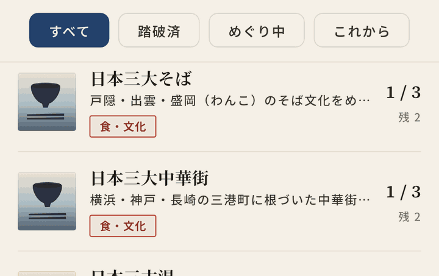

旅のテーマ
旅のテーマ一覧
「現存12天守」「日本三景」のように、ひとつのテーマでつながるスポットを集めました。テーマごとに、対象スポットの一覧・見どころ・効率的な巡り方をまとめています。次の旅の行き先選びやルート作りのヒントにどうぞ。

城 3テーマ
温泉 2テーマ
景色 6テーマ
- 3スポット 日本三景とは 松島・天橋立・宮島の三景。所在地と見どころの一覧、江戸時代にさかのぼる由来、日本新三景との違い、離れた三か所を旅に組み込むコツまで。
- 3スポット 新日本三景とは 大沼・三保松原・耶馬渓の三景。所在地と見どころの一覧、大正の全国投票で選ばれた経緯、日本三景との違いまで。
- 3スポット 日本三大夜景とは 函館山・摩耶山掬星台・稲佐山の三つの展望地。所在地と見どころの一覧、呼び名の成り立ち、新日本三大夜景や日本新三大夜景都市との違いまで。
- 3スポット 日本三大名瀑とは 華厳ノ滝・袋田の滝・那智の滝。所在地と落差の一覧、三つが並ぶ背景、湖の出口・四段の岩壁・御神体という成り立ちの違いまで。
- 3スポット 日本三大鍾乳洞とは 龍泉洞・秋芳洞・龍河洞の三洞。所在地と見どころの一覧、天然記念物としての指定、地底湖と百枚皿と神の壺の違い、洞内を歩く支度まで。
- 3スポット 日本三大カルストとは 秋吉台・四国カルスト・平尾台の三か所。規模と見どころの一覧、白い岩が草原に点在するしくみ、鍾乳洞との関係、訪ねる時期のコツまで。
神社仏閣 1テーマ
食・グルメ 2テーマ
文化体験 2テーマ
史跡・文化財 2テーマ
気になるテーマを、旅の記録に。
めぐたびは、テーマ別に全国のスポットを発見・記録・収集できる無料アプリ。気になるテーマを見つけたら、訪れた場所を記録して踏破を目指せます。
